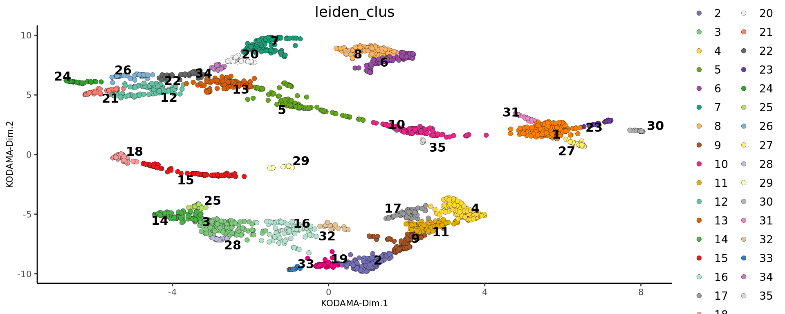

Last updated: 2025-06-05
Checks: 6 1
Knit directory: KODAMA-Analysis/
This reproducible R Markdown analysis was created with workflowr (version 1.7.1). The Checks tab describes the reproducibility checks that were applied when the results were created. The Past versions tab lists the development history.
The R Markdown file has unstaged changes. To know which version of
the R Markdown file created these results, you’ll want to first commit
it to the Git repo. If you’re still working on the analysis, you can
ignore this warning. When you’re finished, you can run
wflow_publish to commit the R Markdown file and build the
HTML.
Great job! The global environment was empty. Objects defined in the global environment can affect the analysis in your R Markdown file in unknown ways. For reproduciblity it’s best to always run the code in an empty environment.
The command set.seed(20240618) was run prior to running
the code in the R Markdown file. Setting a seed ensures that any results
that rely on randomness, e.g. subsampling or permutations, are
reproducible.
Great job! Recording the operating system, R version, and package versions is critical for reproducibility.
Nice! There were no cached chunks for this analysis, so you can be confident that you successfully produced the results during this run.
Great job! Using relative paths to the files within your workflowr project makes it easier to run your code on other machines.
Great! You are using Git for version control. Tracking code development and connecting the code version to the results is critical for reproducibility.
The results in this page were generated with repository version 5f5ac63. See the Past versions tab to see a history of the changes made to the R Markdown and HTML files.
Note that you need to be careful to ensure that all relevant files for
the analysis have been committed to Git prior to generating the results
(you can use wflow_publish or
wflow_git_commit). workflowr only checks the R Markdown
file, but you know if there are other scripts or data files that it
depends on. Below is the status of the Git repository when the results
were generated:
Ignored files:
Ignored: .RData
Ignored: .Rhistory
Ignored: .Rproj.user/
Ignored: analysis/figure/
Untracked files:
Untracked: KODAMA.svg
Untracked: analysis/singlecell_datamatrix.Rmd
Untracked: analysis/singlecell_seurat.Rmd
Untracked: code/Acinar_Cell_Carcinoma.ipynb
Untracked: code/Adenocarcinoma.ipynb
Untracked: code/Adjacent_normal_section.ipynb
Untracked: code/DLFPC_preprocessing.R
Untracked: code/DLPFC - BANKSY.R
Untracked: code/DLPFC - BASS.R
Untracked: code/DLPFC - BAYESPACE.R
Untracked: code/DLPFC - Nonspatial.R
Untracked: code/DLPFC - PRECAST.R
Untracked: code/DLPFC_comparison.R
Untracked: code/DLPFC_results_analysis.R
Untracked: code/MERFISH - BANKSY.R
Untracked: code/MERFISH - BASS.R
Untracked: code/MERFISH - BAYESPACE.R
Untracked: code/MERFISH - Nonspatial.R
Untracked: code/MERFISH - PRECAST.R
Untracked: code/MERFISH_comparison.R
Untracked: code/MERFISH_results_analysis.R
Untracked: code/VisiumHD-CRC.ipynb
Untracked: code/VisiumHDassignment.py
Untracked: code/deep learning code DLPFC.R
Untracked: code/save tiles.py
Untracked: data/Annotations/
Untracked: data/DLFPC-Br5292-input.RData
Untracked: data/DLFPC-Br5595-input.RData
Untracked: data/DLFPC-Br8100-input.RData
Untracked: data/DLPFC-general.RData
Untracked: data/MERFISH-input.RData
Untracked: data/trajectories.RData
Untracked: data/trajectories_VISIUMHD.RData
Untracked: output/BANSKY-results.RData
Untracked: output/BASS-results.RData
Untracked: output/BayesSpace-results.RData
Untracked: output/CRC-image.RData
Untracked: output/CRC-image2.RData
Untracked: output/CRC.png
Untracked: output/CRC2.png
Untracked: output/CRC7.png
Untracked: output/CRC8.png
Untracked: output/CRC_boxplot.png
Untracked: output/CRC_boxplot.svg
Untracked: output/CRC_boxplot2.svg
Untracked: output/CRC_linee.svg
Untracked: output/DL.RData
Untracked: output/DLFPC-All-2.RData
Untracked: output/DLFPC-All.RData
Untracked: output/DLFPC-Br5292.RData
Untracked: output/DLFPC-Br5595.RData
Untracked: output/DLFPC-Br8100.RData
Untracked: output/DLFPC-variablesXdeeplearning.RData
Untracked: output/DLPFC-BANSKY-results.RData
Untracked: output/DLPFC-BASS-results.RData
Untracked: output/DLPFC-BayesSpace-results.RData
Untracked: output/DLPFC-Nonspatial-results.RData
Untracked: output/DLPFC-PRECAST-results.RData
Untracked: output/DLPFC_all_cluster.svg
Untracked: output/DLPFCpathway.RData
Untracked: output/Figure 1 - boxplot.pdf
Untracked: output/Figure 2 - DLPFC 10.pdf
Untracked: output/Figures/
Untracked: output/KODAMA-results.RData
Untracked: output/KODAMA_DLPFC_All_original.svg
Untracked: output/KODAMA_DLPFC_Br5595.svg
Untracked: output/KODAMA_DLPFC_Br5595_slide.svg
Untracked: output/Loupe.csv
Untracked: output/Loupe_CXCL14.csv
Untracked: output/Loupe_CXCL3.csv
Untracked: output/Loupe_GREM1.csv
Untracked: output/Loupe_HTRA3.csv
Untracked: output/Loupe_IGFBP3.csv
Untracked: output/Loupe_IGFBP5.csv
Untracked: output/Loupe_MGP.csv
Untracked: output/Loupe_MMP11.csv
Untracked: output/Loupe_SFRP4.csv
Untracked: output/Loupe_TIMP3.csv
Untracked: output/MERFISH-BANSKY-results.RData
Untracked: output/MERFISH-BASS-results.RData
Untracked: output/MERFISH-BayesSpace-results.RData
Untracked: output/MERFISH-KODAMA-results.RData
Untracked: output/MERFISH-Nonspatial-results.RData
Untracked: output/MERFISH-PRECAST-results.RData
Untracked: output/MERFISH.RData
Untracked: output/Nonspatial-results.RData
Untracked: output/Prostate-GSEA.csv
Untracked: output/Prostate-KODAMA.RData
Untracked: output/Prostate-trajectory.csv
Untracked: output/Prostate.RData
Untracked: output/VisiumHD-RNA.RData
Untracked: output/VisiumHD-genes.pdf
Untracked: output/VisiumHD.RData
Untracked: output/boh.svg
Untracked: output/desmoplastic_distance_carcinoma.csv
Untracked: output/image.RData
Untracked: output/pp.RData
Untracked: output/pp2.RData
Untracked: output/pp3.RData
Untracked: output/pp4.RData
Untracked: output/pp5.RData
Untracked: output/prostate1.svg
Untracked: output/prostate2.svg
Untracked: output/prostate3.svg
Untracked: output/subclusters1.csv
Untracked: output/subclusters2.csv
Untracked: output/subclusters3.csv
Untracked: output/tight_boundary.geojson
Untracked: output/trajectory.csv
Unstaged changes:
Deleted: analysis/D1.Rmd
Deleted: analysis/DLPFC-12.Rmd
Deleted: analysis/DLPFC-4.Rmd
Modified: analysis/DLPFC.Rmd
Deleted: analysis/DLPFC1.Rmd
Deleted: analysis/DLPFC10.Rmd
Deleted: analysis/DLPFC2.Rmd
Deleted: analysis/DLPFC3.Rmd
Deleted: analysis/DLPFC4.Rmd
Deleted: analysis/DLPFC5.Rmd
Deleted: analysis/DLPFC6.Rmd
Deleted: analysis/DLPFC7.Rmd
Deleted: analysis/DLPFC8.Rmd
Deleted: analysis/DLPFC9.Rmd
Deleted: analysis/Du1.Rmd
Deleted: analysis/Du10.Rmd
Deleted: analysis/Du11.Rmd
Deleted: analysis/Du12.Rmd
Deleted: analysis/Du13.Rmd
Deleted: analysis/Du14.Rmd
Deleted: analysis/Du15.Rmd
Deleted: analysis/Du16.Rmd
Deleted: analysis/Du17.Rmd
Deleted: analysis/Du18.Rmd
Deleted: analysis/Du19.Rmd
Deleted: analysis/Du2.Rmd
Deleted: analysis/Du20.Rmd
Deleted: analysis/Du3.Rmd
Deleted: analysis/Du4.Rmd
Deleted: analysis/Du5.Rmd
Deleted: analysis/Du6.Rmd
Deleted: analysis/Du7.Rmd
Deleted: analysis/Du8.Rmd
Deleted: analysis/Du9.Rmd
Modified: analysis/Giotto.Rmd
Modified: analysis/MERFISH.Rmd
Deleted: analysis/MERFISH1a (copy).Rmd
Deleted: analysis/MERFISH1a.Rmd
Deleted: analysis/MERFISH1b (copy).Rmd
Deleted: analysis/MERFISH1b.Rmd
Deleted: analysis/MERFISH2a (copy).Rmd
Deleted: analysis/MERFISH2a.Rmd
Deleted: analysis/MERFISH2b (copy).Rmd
Deleted: analysis/MERFISH2b.Rmd
Deleted: analysis/MERFISH3a (copy).Rmd
Deleted: analysis/MERFISH3a.Rmd
Deleted: analysis/MERFISH3b (copy).Rmd
Deleted: analysis/MERFISH3b.Rmd
Deleted: analysis/MERFISH4a (copy).Rmd
Deleted: analysis/MERFISH4a.Rmd
Deleted: analysis/MERFISH4b (copy).Rmd
Deleted: analysis/MERFISH4b.Rmd
Modified: analysis/Prostate.Rmd
Deleted: analysis/STARmap.Rmd
Modified: analysis/Seurat.Rmd
Deleted: analysis/Simulation.Rmd
Deleted: analysis/Single-cell.Rmd
Modified: analysis/SpatialExperiment.Rmd
Modified: analysis/VisiumHD.Rmd
Modified: code/VisiumHD_CRC_download.sh
Deleted: data/Pathology.csv
Deleted: data/merfish.Rmd
Deleted: data/vis.R
Note that any generated files, e.g. HTML, png, CSS, etc., are not included in this status report because it is ok for generated content to have uncommitted changes.
These are the previous versions of the repository in which changes were
made to the R Markdown (analysis/Giotto.Rmd) and HTML
(docs/Giotto.html) files. If you’ve configured a remote Git
repository (see ?wflow_git_remote), click on the hyperlinks
in the table below to view the files as they were in that past version.
| File | Version | Author | Date | Message |
|---|---|---|---|---|
| html | d1192e9 | Stefano Cacciatore | 2024-08-12 | Build site. |
| html | 3374e66 | Stefano Cacciatore | 2024-08-06 | Build site. |
| html | 35ce733 | Stefano Cacciatore | 2024-08-03 | Build site. |
| html | 82fe167 | Stefano Cacciatore | 2024-07-24 | Build site. |
| html | 6f7daac | Stefano Cacciatore | 2024-07-19 | Build site. |
| Rmd | 3f7aad6 | Stefano Cacciatore | 2024-07-19 | Start my new project |
| Rmd | e7be557 | GitHub | 2024-07-16 | Update Giotto.Rmd |
| html | 40f0fda | GitHub | 2024-07-16 | Update Giotto.html |
| Rmd | b662e13 | GitHub | 2024-07-16 | Update Giotto.Rmd |
| html | 7be8f59 | tkcaccia | 2024-07-15 | updates |
| Rmd | f8ca54a | tkcaccia | 2024-07-14 | update |
| html | f8ca54a | tkcaccia | 2024-07-14 | update |
| Rmd | 89a11c1 | GitHub | 2024-07-08 | Add files via upload |
| html | 2b5aad7 | GitHub | 2024-07-08 | Add files via upload |
Giotto Suite is a collection of open-source software tools, including data structures and methods, for the comprehensive analysis and visualization of spatial multi-omics data at multiple scales and resolutions. More information can be found here.
The data in this tutorial originates from a Visium Spatial Gene Expression slide of the adult mouse. This dataset is available on the 10X Genomics support site and can be downloaded using the following code.
library(KODAMA)
library(KODAMAextra)
library(Giotto)
library(igraph)n.cores=16
# Provide path to Visium data folder
data_path <- '../Giotto_Mouse_brain/'
instrs = createGiottoInstructions(save_dir = '../Temporary',
save_plot = FALSE,
show_plot = TRUE,
python_path = NULL)
## directly from visium folder
visium_brain = createGiottoVisiumObject(visium_dir = data_path,
expr_data = 'raw',
png_name = 'tissue_lowres_image.png',
gene_column_index = 2,
instructions = instrs,
verbose = FALSE)
## check metadata
pDataDT(visium_brain) cell_ID in_tissue array_row array_col
<char> <int> <int> <int>
1: AAACAACGAATAGTTC-1 0 0 16
2: AAACAAGTATCTCCCA-1 1 50 102
3: AAACAATCTACTAGCA-1 1 3 43
4: AAACACCAATAACTGC-1 1 59 19
5: AAACAGAGCGACTCCT-1 1 14 94
---
4988: TTGTTTCACATCCAGG-1 1 58 42
4989: TTGTTTCATTAGTCTA-1 1 60 30
4990: TTGTTTCCATACAACT-1 1 45 27
4991: TTGTTTGTATTACACG-1 0 73 41
4992: TTGTTTGTGTAAATTC-1 1 7 51## show plot
spatPlot2D(gobject = visium_brain, cell_color = 'in_tissue', point_size = 2,
cell_color_code = c('0' = 'lightgrey', '1' = 'blue'))
| Version | Author | Date |
|---|---|---|
| 6f7daac | Stefano Cacciatore | 2024-07-19 |
###Loading and Preparing Data Create Giotto Visium Object
# Create Giotto Visium object
visium_brain <- createGiottoVisiumObject(visium_dir = data_path,
expr_data = 'raw',
png_name = 'tissue_lowres_image.png',
gene_column_index = 2,
instructions = instrs)## subset on spots that were covered by tissue
metadata = pDataDT(visium_brain)
in_tissue_barcodes = metadata[in_tissue == 1]$cell_ID
visium_brain = subsetGiotto(visium_brain, cell_ids = in_tissue_barcodes)
## filter
visium_brain <- filterGiotto(gobject = visium_brain,
expression_threshold = 1,
feat_det_in_min_cells = 50,
min_det_feats_per_cell = 1000,
expression_values = c('raw'),
verbose = FALSE)## normalize
visium_brain <- normalizeGiotto(gobject = visium_brain, scalefactor = 6000, verbose = FALSE)
## add gene & cell statistics
visium_brain <- addStatistics(gobject = visium_brain)
visium_brain <- calculateHVF(gobject = visium_brain)
gene_metadata = fDataDT(visium_brain)
featgenes = gene_metadata[hvf == 'yes' & perc_cells > 3 & mean_expr_det > 0.4]$feat_ID
## run PCA on expression values (default)
visium_brain <- runPCA(gobject = visium_brain, feats_to_use = featgenes)visium_brain=RunKODAMAmatrix(visium_brain, n.cores=n.cores)Calculating Network
Calculating Network spatial
socket cluster with 16 nodes on host 'localhost'
================================================================================
Finished parallel computation
[1] "Calculation of dissimilarity matrix..."
================================================================================visium_brain=RunKODAMAvisualization(visium_brain)visium_brain <- createNearestNetwork(gobject = visium_brain,dim_reduction_to_use = "KODAMA", dim_reduction_name="KODAMA",dimensions_to_use = 1:2, k = 15)
## Leiden clustering
visium_brain <- doLeidenCluster(gobject = visium_brain, resolution = 0.5, n_iterations = 1000,network_name = "sNN.KODAMA")
dimPlot2D(gobject = visium_brain, dim_reduction_to_use ="KODAMA", dim_reduction_name="KODAMA",cell_color = 'leiden_clus',point_size = 2)
spatPlot2D(gobject = visium_brain,cell_color = 'leiden_clus',point_size = 2.5)
| Version | Author | Date |
|---|---|---|
| 6f7daac | Stefano Cacciatore | 2024-07-19 |
sessionInfo()R version 4.4.3 (2025-02-28)
Platform: x86_64-pc-linux-gnu
Running under: Ubuntu 20.04.6 LTS
Matrix products: default
BLAS: /usr/lib/x86_64-linux-gnu/blas/libblas.so.3.9.0
LAPACK: /usr/lib/x86_64-linux-gnu/lapack/liblapack.so.3.9.0
locale:
[1] LC_CTYPE=en_US.UTF-8 LC_NUMERIC=C
[3] LC_TIME=en_US.UTF-8 LC_COLLATE=en_US.UTF-8
[5] LC_MONETARY=en_US.UTF-8 LC_MESSAGES=en_US.UTF-8
[7] LC_PAPER=en_US.UTF-8 LC_NAME=C
[9] LC_ADDRESS=C LC_TELEPHONE=C
[11] LC_MEASUREMENT=en_US.UTF-8 LC_IDENTIFICATION=C
time zone: Etc/UTC
tzcode source: system (glibc)
attached base packages:
[1] parallel stats graphics grDevices utils datasets methods
[8] base
other attached packages:
[1] igraph_2.1.4 Giotto_4.2.1 GiottoClass_0.4.7 KODAMAextra_1.2
[5] e1071_1.7-16 doParallel_1.0.17 iterators_1.0.14 foreach_1.5.2
[9] KODAMA_3.0 Matrix_1.7-3 umap_0.2.10.0 Rtsne_0.17
[13] minerva_1.5.10 workflowr_1.7.1
loaded via a namespace (and not attached):
[1] RColorBrewer_1.1-3 rstudioapi_0.17.1
[3] jsonlite_2.0.0 magrittr_2.0.3
[5] magick_2.8.6 farver_2.1.2
[7] rmarkdown_2.29 fs_1.6.5
[9] zlibbioc_1.50.0 vctrs_0.6.5
[11] GiottoUtils_0.2.4 askpass_1.2.1
[13] terra_1.8-42 htmltools_0.5.8.1
[15] S4Arrays_1.4.1 SparseArray_1.4.8
[17] sass_0.4.9 parallelly_1.43.0
[19] bslib_0.9.0 htmlwidgets_1.6.4
[21] plotly_4.10.4 cachem_1.1.0
[23] whisker_0.4.1 misc3d_0.9-1
[25] lifecycle_1.0.4 pkgconfig_2.0.3
[27] rsvd_1.0.5 R6_2.6.1
[29] fastmap_1.2.0 GenomeInfoDbData_1.2.12
[31] MatrixGenerics_1.16.0 future_1.34.0
[33] digest_0.6.37 colorspace_2.1-1
[35] S4Vectors_0.42.1 ps_1.9.0
[37] rprojroot_2.0.4 irlba_2.3.5.1
[39] RSpectra_0.16-2 GenomicRanges_1.56.2
[41] beachmat_2.20.0 labeling_0.4.3
[43] httr_1.4.7 abind_1.4-8
[45] compiler_4.4.3 proxy_0.4-27
[47] withr_3.0.2 backports_1.5.0
[49] BiocParallel_1.38.0 R.utils_2.13.0
[51] openssl_2.3.2 rappdirs_0.3.3
[53] DelayedArray_0.30.1 rjson_0.2.23
[55] gtools_3.9.5 GiottoVisuals_0.2.12
[57] tools_4.4.3 httpuv_1.6.15
[59] future.apply_1.11.3 R.oo_1.27.0
[61] glue_1.8.0 dbscan_1.2.2
[63] callr_3.7.6 promises_1.3.2
[65] grid_4.4.3 checkmate_2.3.2
[67] getPass_0.2-4 snow_0.4-4
[69] generics_0.1.3 gtable_0.3.6
[71] R.methodsS3_1.8.2 class_7.3-23
[73] tidyr_1.3.1 data.table_1.17.0
[75] ScaledMatrix_1.12.0 BiocSingular_1.20.0
[77] XVector_0.44.0 BiocGenerics_0.50.0
[79] ggrepel_0.9.6 pillar_1.10.2
[81] stringr_1.5.1 later_1.4.2
[83] dplyr_1.1.4 lattice_0.22-7
[85] tidyselect_1.2.1 Rnanoflann_0.0.3
[87] SingleCellExperiment_1.26.0 knitr_1.50
[89] git2r_0.33.0 IRanges_2.38.1
[91] SummarizedExperiment_1.34.0 scattermore_1.2
[93] stats4_4.4.3 xfun_0.52
[95] Biobase_2.64.0 matrixStats_1.5.0
[97] stringi_1.8.7 UCSC.utils_1.0.0
[99] lazyeval_0.2.2 yaml_2.3.10
[101] evaluate_1.0.3 codetools_0.2-20
[103] tcltk_4.4.3 tibble_3.2.1
[105] colorRamp2_0.1.0 cli_3.6.4
[107] reticulate_1.42.0 munsell_0.5.1
[109] processx_3.8.6 jquerylib_0.1.4
[111] Rcpp_1.0.14 GenomeInfoDb_1.40.1
[113] doSNOW_1.0.20 globals_0.16.3
[115] png_0.1-8 ggplot2_3.5.2
[117] listenv_0.9.1 SpatialExperiment_1.14.0
[119] viridisLite_0.4.2 scales_1.3.0
[121] purrr_1.0.4 crayon_1.5.3
[123] rlang_1.1.5 cowplot_1.1.3